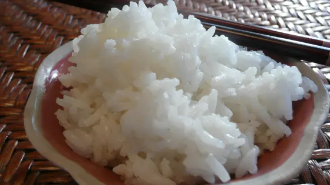

Perfect Steamed Rice Recipe

Description:
How to make perfectly steamed rice, every time!
Ingredients:
Steps:
-
WASH THE RICE: Rinse under running water, rubbing the grains together between the palms of your hands; continue this rinsing until the water runs fairly clear. THIS WILL TAKE A COUPLE MINUTES; DON'T RUSH THIS MOST IMPORTANT STEP!
-
Place rice in a covered sauce pan; add water to 1/2-inch above the rice; put on high heat. Stay in the area -- don't fall asleep -- PAY ATTENTION!
-
As soon as it boils rapidly, reduce heat to medium/low and keep simmering for 10 minutes. DO NOT PEEK. DO NOT OPEN THE LID.
-
Remove pot from burner but STILL DO NOT OPEN THE LID; let the rice rest undisturbed for five minutes.
-
Fluff the rice with a pair of chopsticks before serving.
Return to main page